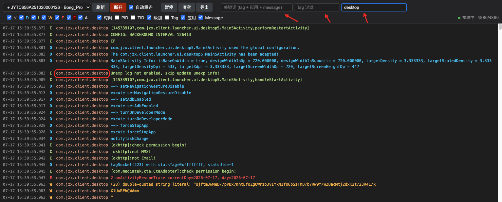
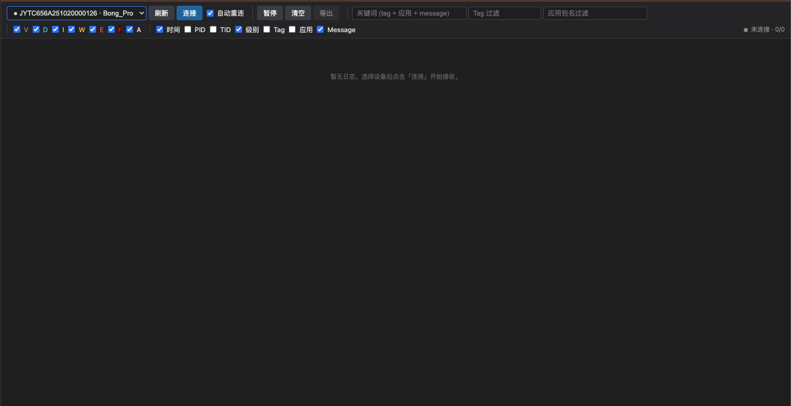
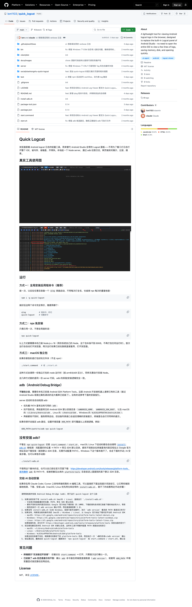

QUICK LOGCAT
只想看
一行报错
却要先打开整个 Android Studio。
STARTING…
Android Studio
Indexing project files…
而你只是想看一行日志
THE OLD FLOW
4 STEPS
四步之后，
才看到那一行。
1
启动 Android Studio
2
找到 Logcat 面板
3
连接设备、筛选日志
4
终于看到那一行报错

ONE COMMAND
不用装插件。
一条命令就够。
TERMINAL
$
本地 Node 服务
自动开浏览器
Node.js 18+
HOW IT RUNS
日志走你
本机的 adb。
http://localhost:5174

1
本机起服务，浏览器直接打开
2
日志由本机 adb 抓取
✓
数据不上传任何第三方
WHAT IT DOES
REAL UI
把日志
先变得可看。
真机 / 模拟器 随时切
设备下拉里选，连上就开始收
V D I W E F A 级别过滤
只留你关心的那一级
关键字 · Tag · 包名
三个输入框，叠加过滤
暂停
清空
导出
自动重连
BOUNDARY
它不替代
Android Studio
。
需要做什么？
更合适的工具
编译、断点、Profiler
Android Studio
临时联调、真机排错
quick-logcat
只想看一行 Logcat
quick-logcat
THE POINT
只想马上
看一眼日志？
它
更轻
，也
更直接
。
OPEN SOURCE
已经开源，
MIT License。
github.com/lsm1103/quick_logcat

npx quick-logcat
github.com/lsm1103/quick_logcat · MIT
QUICK LOGCAT